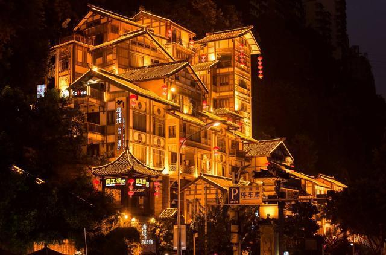
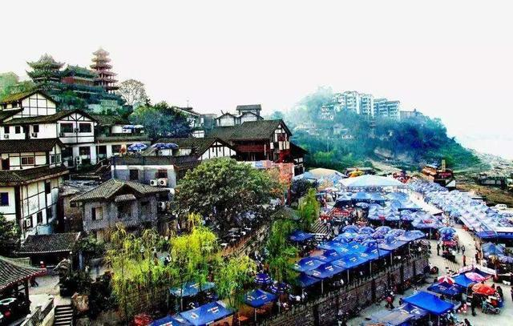
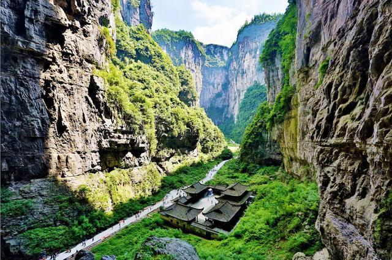
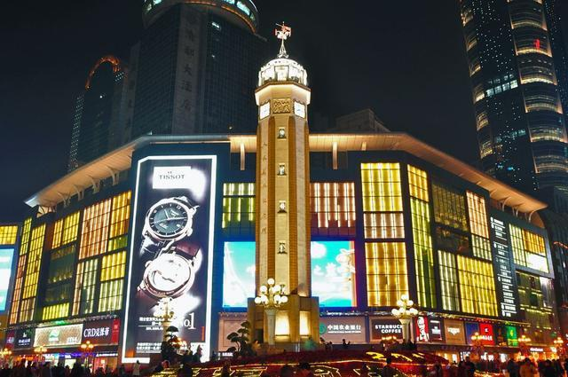
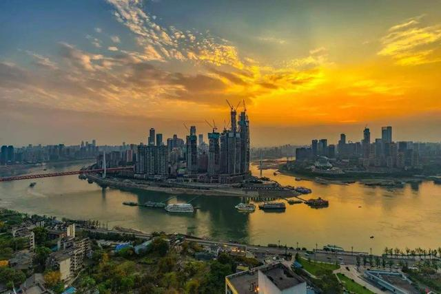

2019-12-1
在这个世界上
想要找回迷失的自己
大概有两种方法
第一种是读书，第二种就是旅行
来重庆吧，这里的气候、风景、美食和文艺小调，都能让你流连、回望。
爱上重庆很简单
快来体验一下吧
洪崖洞---必打卡的地方之一
洪崖洞，一个去重庆必打卡的地点之一。开灯后的洪崖洞可以说是跟魔幻世界一样。我到达洪崖洞时是在楼顶，因此还要等电梯下去一楼对面拍照，进去等电梯等了我将近半个小时，每次要不就是满人了要不就是一次只能进去两个人。
所以想去拍照的话可以直接到滨江路上，可以节约了很多的时间。经典的机位还包括千厮门大桥上跟洪崖洞的对岸。
磁器口古镇——千年古镇，重庆缩影
磁器口古镇位于重庆市沙坪坝区嘉陵江畔，始建于宋代，面积1.5平方公里，东临嘉陵江，南接沙坪坝，西界童家桥，北靠石井坡，距主城区3公里，是历经千年变迁而保存至今的重庆市重点保护传统街。
磁器口古镇拥有"一江两溪三山四街"的独特地貌。马鞍山踞其中，金碧山蹲其左，凤凰山昂其右，三山遥望，两谷深切。凤凰、清水双溪潆洄并出，嘉陵江由北而奔，江宽岸阔，水波不兴，实为天然良巷。作为嘉陵江边重要的水陆码头，被赞誉为"小重庆"，是重温老重庆旧梦的好去处。
武隆天生三桥——喀斯特地貌，大自然的鬼斧神工，很壮观很震撼
武隆天生桥又名天坑三硚，是自然地质奇观旅游区，典型的喀斯特地貌。景区以天龙桥、青龙桥、黑龙桥三座天然形成的石拱桥组成。
从游玩感受来说，天生三桥气势磅礴，是一个特别值得去的景点，武隆喀斯特地貌是中国南方喀斯特地貌的主要代表之一，与其它熟知的喀斯特地貌相比，这里更是地平面下的艺术，它们藏匿于地下，谦逊内敛而不失遒劲豪壮，奇绝而瑰丽，可谓天设地造鬼斧神工！
解放碑——重庆的地标之一，最繁华的商业步行街之一
解放碑是全国唯一一座纪念中华民族抗日战争胜利的国家纪念碑，是抗战胜利和重庆解放的历史建筑，非常有纪念意义。解放碑的广场上总是人来人往，每天都有非常多的游客来此地合影留念，也是来重庆的游客必须要来的地方，同时也是重庆的街拍圣地，经常可以看到美女模特。
白天的解放碑可以看到高楼林立，很有现代化的感觉。晚上的解放碑人潮涌动，是重庆市民和游客们夜生活的中心地带。不管什么时候来，解放碑也都很适合拍照。拍照点可以选择在街上或者是在附近的大楼楼顶。
重庆朝天门广场——码头广场，可以看到两种不同颜色的江水交汇
朝天门位于重庆东北嘉陵江、长江交汇处。原题“古渝雄关”，曾是重庆十七座古城门之一，所以是必打卡的景点。
朝天门左侧嘉陵江纳细流汇小川，碧绿的嘉陵江水与褐黄色的长江水激流撞击，漩涡滚滚，清浊分明，形成“夹马水”景观，其势如野马分鬃，十分壮观。右侧长江容嘉陵江水后，声势益发浩荡，穿三峡，通江汉，一泻千里，自此称为长江上的“黄金水段”